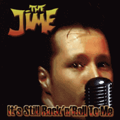

the Jime - It's Still Rock 'N' Roll To Me (Album, 2002)
01 - It's Still Rock'n'Roll To Me (2:41)
02 - There's A Thing About Love (2:36)
03 - Wanna Rock, Wanna Bop (2:47)
04 - Lonesome Train (2:27)
05 - Rock It! Rock It! (2:49)
06 - Looking For A Girl Like You (2:41)
07 - Learning To Fly (4:19)
08 - Had Enough Of Love (3:29)
09 - Around The World (3:43)
10 - Sign Of The Times (3:24)
11 - Time Gone By (4:14)
12 - Wild Wild Wild (3:26)
13 - Do It (3:08)
14 - I Wanna Hold... (3:47)
15 - Help (3:01)
16 - On The Other Side (2:35)
© Nervous Records :: [NERCD 102]
Notes
Review
311/366 (Project 366)
Rockabilly niftiness with mighty guitar frills. Slightly spherical overall sound and as noted on the Nervous Records website, to paraphrase a little, as from another dimension. Most of the catchy points of Rockabilly with a lot more bells and whistles. But not glossy, instead rather rockin' and raw ones. The vocals add a special charm and helps keep the album consistent. And the piano in particular adds some special delicacy to a number of tracks. The album actually consists of quite distinctive and varied sections - different forms and moods of Rock'n'Roll, some Rockabilly shades, honky tonkin', traditional ways of pop. All tracks are self-written, but four are covers ("It's Still Rock'n'Roll To Me", "Lonesome Train", "Learning To Fly", "Help"). On the whole, lots of authentic and classic rockabilly feel, but still done in a new way. Vince Gordon put in a lot of effort and experience. Some things sound pretty rough, and some sound boogie jive. Some are just conceptual and smooth. All in all, a pretty good rockin 'and rollin' album. Maybe something contains extra, but It's Still Rock 'N' Roll To Him.